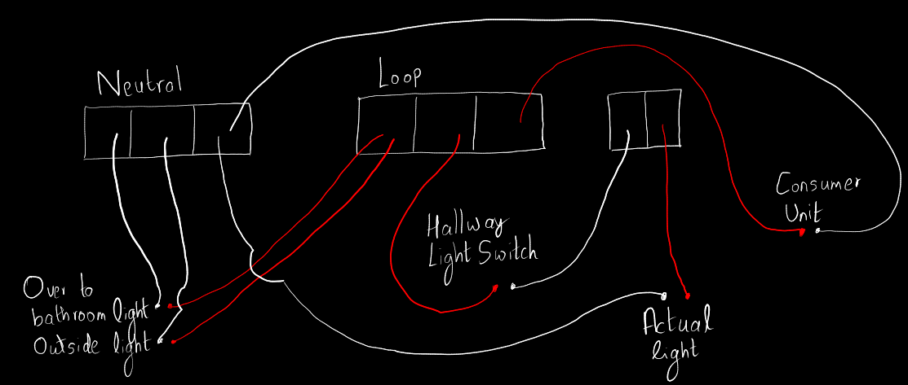

Light pendant from a ceiling rose
Hallway lighting
[
Pouse
,
Single pole switch
,
Potentially a good explanation
,
Good diagram towards the end
,
Good labeled diagram
]

Hallway ceiling rose
Todo
How to think of current flow loops? Videos that might help:
ref1
,
ref2
.
What is neutral and earth?
Ref
.